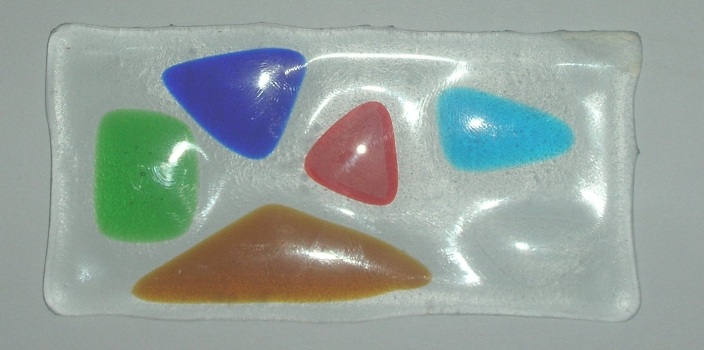
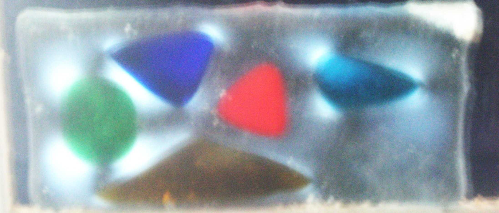
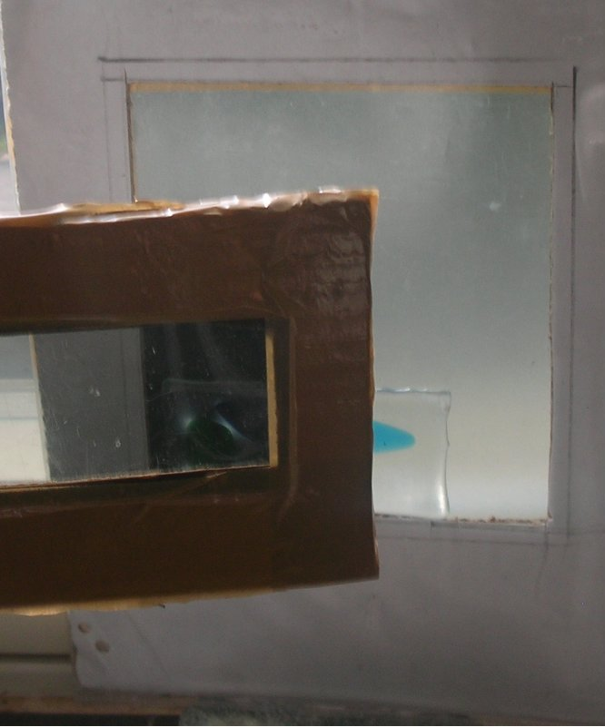
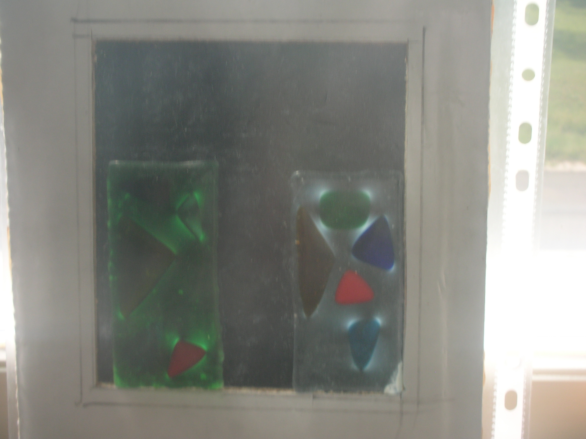

Aurinkolasitesti
Polarisoivia aurinkolasejakin voi käyttää testaamiseen. Tarvitset kaksi linssiä ristikkäin.
|  Koepalan fuusaus |
 |
|  Testiliuska on pantu kahden ristiin polarisoidun kalvon väliin. Huomaa miten ne yhdessä sulkevat valon pois, mutta testliuskassa oleva jännitys näkyy halokehänä. |
 Tässä kuvassa on samanlaiset testipalat fuusattu kahdelle eri pohjalasille. Ikkunalasin kanssa punainen sopii hyvin ilman stressiä, mutta yhteensopivana myydylle vihreälle punainen aiheuttaa selvän halo-ilmiön. |